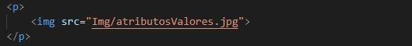
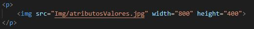
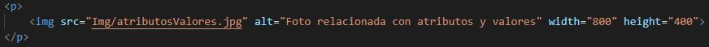
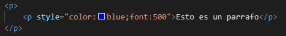
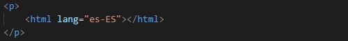
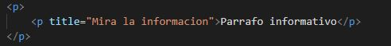

¿QUES SON LOS ATRIBUTOS EN HTML?

Este atributo permite indexar una direccion WEB por medio de la insecion del link de la misma para ubicarlo se hace generalmente dentro del atributo <a> de la siguiente manera:
Este atributo permite evaluar el lugar de ubicacion de una imagen u objeto determinado; generalmente se ubica dentro de una etiqueta <img>, en ella se puede especificar la ruta del archivo como se puede ver en este ejemplo:

por tratarse de una imagen esta se puede dimensionar por medio de los valores width el cual determina el ancho de la imagen y height el cual permite dar el valor que tendra la altura de la imagen, como ejemplo tendriamos lo siguiente:

Este atributo permite mostrar de manera alternativa un texto en caso de que no se pueda mostrar una imagen debido a que no exista. Las personas que visualizan la pantalla pueden leer el atributo alt y usualmente es empleado dentro de la etiqueta <img> tal y como se puede observar en este ejemplo:

Con este atributo podemos definir diferentes tipos de caracterisiticas para la fuente tales como el color, tipo de fuente, tamaño, etc. Este atributo generalmente se especifica dentro de un parrafo <p> tal como se oberva en este ejemplo:

En un documento HTML se puede declarar el idioma que se va a manejar en el y esto se hace empleando el atributo lang. Esto es importante debido a que de esta manera se observa la accesibilidad a las aplicaciones, lectores de pantalla y motores de busqueda.

Es un atributo que se agrega al titulo generalmente contenido dentro de un parrafo <p> Y este se muestra como informacion relacionada al parrafo cuando el mouse se paso sobre este.

Tomado de: Celaya Luna, A. (2014). Creación de páginas web: HTML5. p. 1 - 60. https://elibro-net.bibliotecavirtual.unad.edu.co/es/ereader/unad/56045